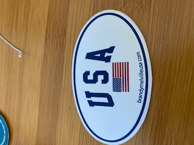

<ol>
    <div class = "test_image_and_result col-xs-12">

        <li class = "col-sm-4 col-xs-12">
            <b>Test Image -</b>
            
        </li>

        <h5 class = "col-sm-4 col-xs-12">
            Output on <b>GOOGLE LENS</b> -
        <span>USA Sticker</span>
        </h5>

        <h5 class = "col-sm-4 col-xs-12">
            Output on <b>Mobilenet Model</b> -
        <span>Oval Mirror</span>
        </h5>

        <div class = "mini_result" class = "col-xs-12">
            <h4>Result - </h4>
            <hr>
            <h4>I have tested 3 different images. GOOGLE LENS proved to have more accurate answers. Therefore, GOOGLE LENS is a better resource to identify different objects</h4>
        </div>
    </div>
</ol>